UNIDAD 3:
DEL MODELO CONCEPTUAL AL MODELO RELACIONAL Y NORMALIZACIÓN
FICHA TÉCNICA DE LA UNIDAD DIDÁCTICA ¶
| Parámetro | Detalle |
| Unidad Didáctica | Unidad 3: Del Modelo Conceptual al Modelo Relacional. Normalización |
| Resultados de Aprendizaje | RA2: Diseña modelos lógicos normalizados interpretando diagramas entidad/relación. |
| Criterios de Evaluación | CE 2.3, CE 2.4, CE 2.5, CE 2.6, CE 2.7, CE 2.8, CE 2.9 |
| Tiempo Estimado | 24 horas (distribuidas en sesiones de teoría, codificación y talleres de diseño) |
¶
ÍNDICE DE CONTENIDOS ¶
1. INTRODUCCIÓN Y CONTEXTUALIZACIÓN
2. EL MODELO RELACIONAL DE EDGAR F. CODD
3. DEL DIAGRAMA E/R AL MODELO RELACIONAL
3.1. Regla de Entidades (Fuertes y Débiles)
3.2. Regla de Relaciones 1:N (Uno a Varios)
3.3. Regla de Relaciones N:M (Varios a Varios)
3.4. Regla de Relaciones 1:1 (Uno a Uno)
3.5. Relaciones de Dependencia (Existencia e Identificación)
3.6. Relaciones de Grado Superior (Relaciones Ternarias o Grado 3)
3.7. Transformación de Jerarquías o Relaciones de Herencia (ISA)
4.2. Tipos de Dependencias Funcionales
4.3. Primera Forma Normal (1FN)
4.4. Segunda Forma Normal (2FN)
5. CASOS PRÁCTICOS DE NORMALIZACIÓN
1. INTRODUCCIÓN Y CONTEXTUALIZACIÓN ¶
El diseño de bases de datos es un proceso iterativo de abstracción que traduce los requisitos del mundo real de una organización a estructuras lógicas eficientes y robustas. Esta unidad didáctica cubre el puente crítico entre el Modelo Conceptual (Entidad-Relación) —orientado al negocio y validado por el cliente— y el Modelo Lógico (Relacional) —orientado al sistema y matemáticamente riguroso—.
Como futuros Administradores de Sistemas Informáticos en Red (SysAdmins), el dominio del paso de esquemas conceptuales a esquemas relacionales normalizados es clave. Un diseño lógico incorrecto se traducirá directamente en pérdida de rendimiento físico de la infraestructura de base de datos, problemas de concurrencia de transacciones y corrupción de datos (anomalías de borrado o actualización). Esta unidad conecta de forma directa con la Unidad 4 (Lenguaje de Definición de Datos, DDL) y con módulos posteriores del ciclo como Administración de Sistemas Gestores de Bases de Datos (ASGBD) en segundo curso, donde la optimización de servidores MySQL/MariaDB dependerá del esquema lógico que hayamos construido en esta fase.
2. EL MODELO RELACIONAL DE EDGAR F. CODD ¶
Creado por Edgar F. Codd en 1970 en los laboratorios de IBM, el modelo relacional tiene una sólida base matemática fundamentada en la teoría de conjuntos y el álgebra relacional.
2.1. Conceptos Fundamentales ¶
Relación: Conceptualmente equivale a lo que denominamos una tabla. Es una estructura bidimensional.
Tupla: Equivale a una fila o registro. Representa una ocurrencia o instancia concreta de la relación.
Atributo: Equivale a una columna o campo. Representa una propiedad o característica de la relación.
Dominio: El conjunto de valores válidos y atómicos que puede tomar un atributo determinado (ej. el dominio del atributo Edad es el conjunto de enteros positivos menores que 120).
Clave Candidata: Cualquier atributo o conjunto mínimo de atributos que permite identificar de forma unívoca cada tupla de la relación.
Clave Primaria (Primary Key - PK): La clave candidata que el diseñador de la base de datos elige para identificar de forma unívoca las tuplas. No puede contener valores duplicados ni nulos.
Clave Ajena o Foránea (Foreign Key - FK): Atributo o conjunto de atributos de una tabla cuyos valores deben coincidir exactamente con los valores de la clave primaria de otra tabla (o de la misma, en caso de reflexividad). Es el mecanismo relacional para establecer uniones.
2.2. Reglas de Integridad ¶
Para garantizar la consistencia de los datos, el Modelo Relacional impone dos reglas de integridad inviolables:
Integridad de la Entidad: Ningún atributo que forme parte de la clave primaria de una relación puede tomar un valor nulo (NULL). Cada tupla debe poder identificarse de forma única.
Integridad Referencial: Si una relación contiene una clave ajena, cada valor de esta clave ajena debe coincidir con un valor de clave primaria existente en la tabla referenciada, o bien ser completamente nulo (NULL) si la relación de negocio lo permite.
3. DEL DIAGRAMA E/R AL MODELO RELACIONAL ¶
Para traducir un esquema conceptual Entidad-Relación (E-R) al modelo lógico relacional, se aplica un conjunto de reglas algorítmicas estandarizadas.
Modelo Conceptual E-R
▼ (Reglas de Transformación Lógica)
Modelo Lógico Relacional
▼ (Refinamiento de Calidad)
Normalización (1FN, 2FN, 3FN)
3.1. Regla de Entidades (Fuertes y Débiles) ¶
Entidades Fuertes: Cada entidad fuerte genera una única tabla (relación). Los atributos de la entidad pasan a ser las columnas de la tabla. El identificador principal de la entidad se convierte en la Clave Primaria (PK), que se representa subrayada.
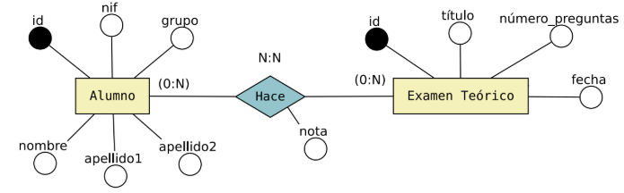
Ejemplo:
ALUMNO(id, nombre, apellido1, apellido2, nif, grupo)
EXAMEN_TEÓRICO(id, título, número_preguntas, fecha)
Entidades Débiles: Generan una tabla propia. Sin embargo, si es una entidad débil en identificación, necesita heredar la clave primaria de la entidad fuerte de la que depende. Esta clave heredada actuará en la tabla de la entidad débil como clave ajena (FK) y, a su vez, formará parte de la clave primaria (PK) compuesta de la propia entidad débil junto con su discriminador.
3.2. Regla de Relaciones 1:N (Uno a Varios) ¶
Las relaciones con cardinalidad no generan una nueva tabla por sí mismas. En su lugar, se realiza una propagación de clave:
La clave primaria de la entidad que aporta la cardinalidad mínima se añade como una columna adicional en la tabla de la entidad que está en el lado de cardinalidad máxima. Esta columna se convierte en una Clave Ajena (FK) en la tabla destino.
Si la relación posee atributos propios, estos atributos también se propagan a la tabla del lado de la cardinalidad máxima.
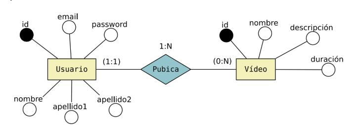
USUSARIO(id, email, password, nombre, apellido1, apellido2)
VÍDEO(id, nombre, descripción, duración, id_usuario) id_usuario FK de USUARIO(id)
Relaciones Reflexivas 1:N: El mismo principio se aplica cuando una entidad se relaciona consigo misma con cardinalidad . La clave primaria de la tabla se duplica dentro de la misma tabla con un rol diferente (Clave Ajena que apunta a la propia tabla).
Ejemplo (Jefes y Empleados):
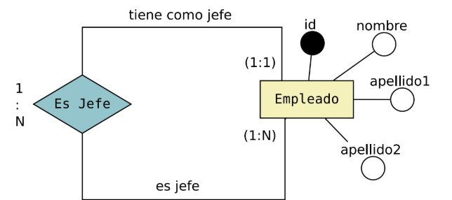
EMPLEADO(id, nombre, apellido1, apellido2, id_jefe)
Donde id_Jefe es una FK que referencia internamente a EMPLEADO(id).
3.3. Regla de Relaciones N:M (Varios a Varios) ¶
Toda relación con cardinalidad (muchos a muchos) genera obligatoriamente una nueva tabla en el modelo relacional.
La clave primaria de esta nueva tabla estará compuesta por la concatenación de las claves primarias de las entidades asociadas. Cada una de ellas actúa individualmente como clave ajena (FK).
Si la relación contiene atributos propios (como fechas, cantidades, etc.), se añaden como columnas a esta nueva tabla.
Ejemplo:
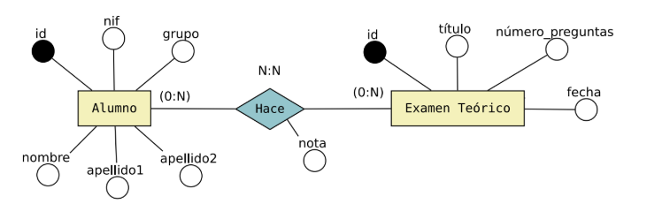
ALUMNO(id, nombre, apellido1, apellido2, nif, grupo)
EXAMEN_TEÓRICO(id, título, número_preguntas, fecha)
ALUMNO_HACE_EXAMEN_TEÓRICO(id_alumno, id_examen, nota) donde
id_alumno FK de ALUMNO(id)
id_examen FK de EXAMEN_TEÓRICO(id)
Habrá casos donde los atributos de la relación también formarán parte de la clave primaria de la nueva tabla. Estos casos aparecerán cuando en la relación existan atributos de tipo fecha y sea necesario almacenar un histórico de las relaciones entre las dos entidades en función de las fechas. Estos casos también pueden resolverse añadiendo un nuevo identificador de tipo entero con autoincremento en lugar de utilizar una clave primaria compuesta por varias columnas.
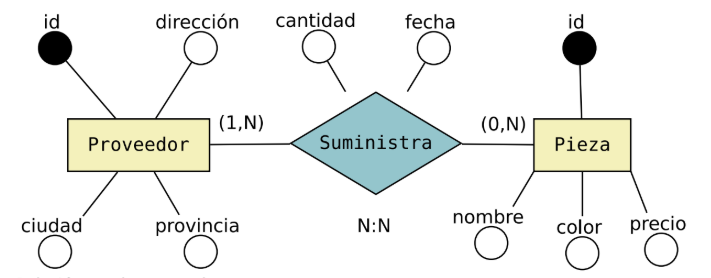
PROVEEDOR(id, dirección, ciudad, provincia)
PIEZA(id, nombre, color, precio)
PROVEEDOR_SUMINISTRA_PIEZA(id_proveedor, id_pieza, fecha, cantidad)
Con esta solución podemos tener un problema en el caso de que un proveedor nos suministre piezas con el mismo id en fechas diferentes. Para solucionarlo podemos incluir el atributo fecha como parte de la clave primaria de la tabla, de modo que la clave primaria estará compuesta por id_proveedor, id_pieza y fecha.
PROVEEDOR_SUMINISTRA_PIEZA(id_proveedor, id_pieza, fecha, cantidad)
Otra forma de resolver este problema puede ser creando un nuevo atributo id que sea un valor numérico con autoincremento y que éste sea la única clave primara de la tabla. La solución sería la siguiente:
PROVEEDOR_SUMINISTRA_PIEZA(id, id_proveedor, id_pieza, fecha_hora, cantidad)
Relaciones Reflexivas N:M: También generan una nueva tabla. Dado que las dos claves foráneas que componen la clave primaria apuntan a la misma tabla origen, deben renombrarse para evitar conflictos de nombres.
Ejemplo (Vídeos relacionados entre sí):
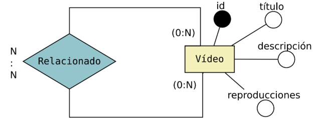
VÍDEO(id, título, descripción, reproducciones)
VÍDEOS_RELACIONADOS(id_video, id_video_relacionado) donde
id_video, id_video_relacionado FK de VIDEO(id)
3.4. Regla de Relaciones 1:1 (Uno a Uno) ¶
El paso a tablas de las relaciones con cardinalidad depende de las cardinalidades mínimas (participación) de las entidades:
Participación (1,1)..(0,1): La clave primaria de la entidad con participación obligatoria se propaga a la tabla de la entidad con participación opcional como clave ajena. De esta forma, se minimiza la cantidad de valores nulos (NULL) en la base de datos.
Ejemplo: Un usuario tiene o no un canal de YouTube.
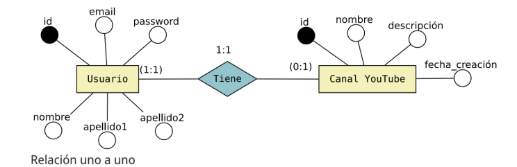
USUARIO(id, email, password, nombre, apellido1, apellido2)
CANAL_YOUTUBE(id, nombre, descripción, fecha_creación, id_usuario)
Participación (1,1)..(1,1): Al ser ambas obligatorias, podemos propagar la clave en cualquiera de los dos sentidos, o incluso unificar ambas entidades en una única tabla si comparten un ciclo de vida idéntico.
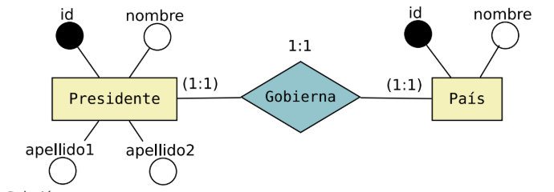
Opción A: Propagar clave de Presidente a País.
PRESIDENTE(id, nombre, apellido1, apellido2)
PAÍS(id, nombre, id_presidente)
Opción B: Propagar clave de País a Presidente.
PAÍS(id, nombre)
PRESIDENTE(id, nombre, apellido1, apellido2, id_país)
Opción C: Propagar cada clave a la otra tabla
PRESIDENTE(id, nombre, apellido1, apellido2, id_país)
PAÍS(id, nombre, id_presidente)
Participación (0,1)..(0,1): En este caso de alta opcionalidad por ambas partes, se recomienda crear una nueva tabla para la relación para evitar tener un volumen masivo de registros con campos a valor NULL. La clave primaria de esta tabla será una de las dos claves importadas.
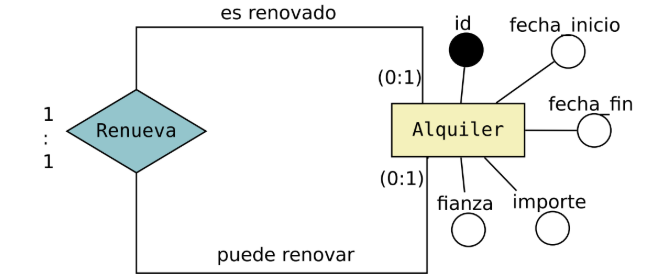
ALQUILER(id, fecha_inicio, fecha_fin, importe, fianza)
ALQUILER_RENUEVA_ALQUILER(id_alquiler, id_alquiler_anterior)
3.5. Relaciones de Dependencia (Existencia e Identificación) ¶
Dependencia en Existencia: Se comporta como una relación normal. Sin embargo, se debe configurar una restricción física de borrado en cascada (ON DELETE CASCADE) en el motor de la base de datos para que al suprimir el registro padre se elimine el registro dependiente de forma automática.
Dependencia en Identificación: Ocurre con entidades débiles cuyos registros no pueden identificarse sin la clave del padre. La clave de la entidad fuerte pasa a la tabla de la entidad débil como foránea y, simultáneamente, forma parte de la clave primaria de esta.
Ejemplo (Cursos y Grupos):
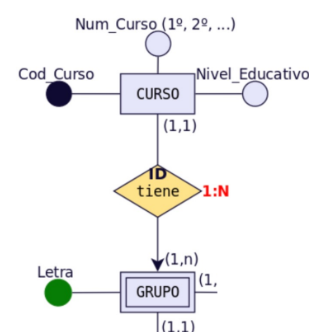
CURSO (Cod_Curso, Num_Curso, Nivel_Educativo)
GRUPO (Letra, Cod_Curso)
3.6. Relaciones de Grado Superior (Relaciones Ternarias o Grado 3) ¶
Siempre que sea posible en el análisis, es recomendable descomponerlas en relaciones binarias. Si es estrictamente necesario mantener la relación de grado 3, su transformación depende de sus cardinalidades máximas:
Cardinalidad N:N:N: Genera una nueva tabla. Su clave primaria es compuesta, formada por la concatenación de las claves primarias de las tres entidades involucradas.
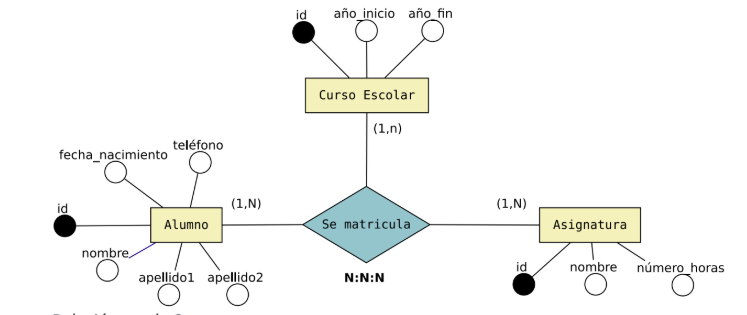
Cardinalidad 1:N:N: En este caso creamos una tabla. La clave primaria de la nueva tabla estará formada por las dos claves de las entidades que participan como N en la relación.
Cardinalidad 1:1:N: En este caso no es necesario crear una tabla. La entidad que participa como N recibe las claves de las dos entidades que participan como 1.
3.7. Transformación de Jerarquías o Relaciones de Herencia (ISA) ¶
Existen varias soluciones para realizar el paso a tablas de una especialización. La solución que se elija en cada caso dependerá del tipo de especialización que estemos resolviendo: total, parcial, inclusiva o exclusiva.
Las 3 soluciones posibles que podemos aplicar son las siguientes:
Crear una única tabla para la superclase. En este caso todos los atributos de las subclases se guardarán en la superclase.
Crear una tabla sólo para las subclases. En este caso los atributos de la superclase habría que guardarlos en cada una de las subclases.
Crear una tabla para cada una de las entidades, tanto para la superclase como las subclases.
En este caso las subclases tendrían que guardar la clave de la primaria de la superclase.
Ejemplo de especialización exclusiva/total
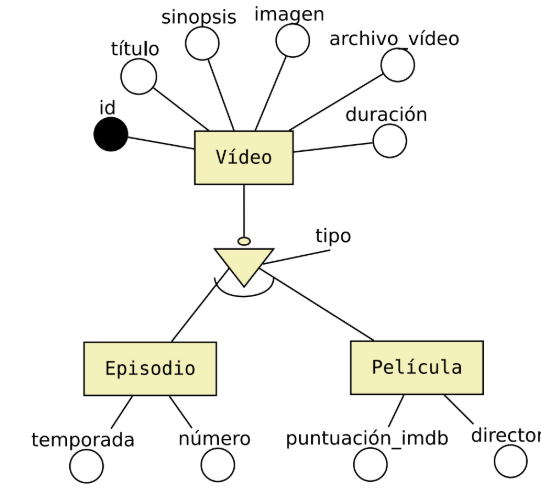
En este caso sería adecuado utilizar la solución 2 o 3. También sería posible utilizar la solución 1, pero al tratarse de una especialización exlusiva, tendríamos muchas columnas con valores NULL .
Solución 2: Crear una tabla sólo para las subclases.
EPISODIO(id, título, sinopsis, imagen, archivo_vídeo, duración temporada, número)
PELÍCULA(id, título, sinopsis, imagen, archivo_vídeo, duración puntuación_imdb, director)
Solución 3: Crear una tabla para cada una de las entidades.
VÍDEO(id, título, sinopsis, imagen, archivo_vídeo, duración, tipo)
EPISODIO(id, temporada, número)
PELÍCULA(id, puntuación_imdb, director)
Ejemplo de especialización inclusiva/total
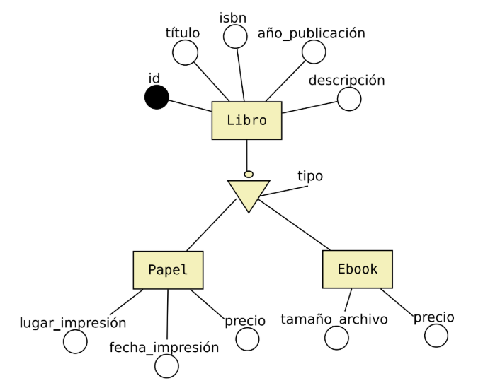
En este caso podríamos utilizar cualquiera de las tres soluciones, dependerá del contexto del ejercicio y de cómo se relacionan estas entidades con el resto de entidades del diagrama.
Solución 1. Crear una única tabla para la superclase.
LIBRO(id, título, isbn, año_publicación, descripción, tipo, lugar_impresión, fecha_impresión,
precio_papel, tamaño_archivo, precio_ebook)
Solución 2: Crear una tabla sólo para las subclases.
LIBRO_PAPEL(id, título, isbn, año_publicación, descripción, lugar_impresión,
fecha_impresión, precio)
LIBRO_EBOOK(id, título, isbn, año_publicación, descripción, tamaño_archivo, precio)
Solución 3: Crear una tabla para cada una de las entidades.
LIBRO(id, título, isbn, año_publicación, descripción, tipo)
LIBRO_PAPEL(id, fecha_impresión, precio) id: FK de LIBRO(id)
LIBRO_EBOOK(id, tamaño_archivo, precio) id: FK de LIBRO(id)
Existen cuatro alternativas de diseño físico para implementar la especialización en bases de datos relacionales. La elección dependerá de si la herencia es total o parcial, y exclusiva o solapada:
Caso 1 (Tres tablas independientes vinculadas): Se crea una tabla para la superclase y otra para cada subclase. Las tablas de las subclases heredan la PK de la superclase como su propia PK y clave ajena a la vez. Es ideal para jerarquías solapadas y con gran cantidad de atributos específicos.
Caso 2 (Tablas de subclase únicamente): Desaparece la superclase. Se crea una tabla para cada subclase que contiene tanto los atributos propios de la subclase como todos los atributos de la superclase. Solo es aplicable si la especialización es total (cobertura completa).
Caso 3 (Tabla única con discriminante de tipo): Se unifica todo en una única tabla que incluye los atributos de la superclase y de todas las subclases. Se añade un campo "Tipo" que actúa como discriminante. Genera campos NULL en los registros para los atributos que no pertenecen a su tipo, pero es la opción más rápida para consultas. Muy recomendable para especializaciones exclusivas.
Caso 4 (Tabla única con flags booleanos): Similar al caso anterior, pero sustituyendo el campo "Tipo" por campos de verificación booleanos (EsDirectivo, EsTecnico, etc.). Es la forma óptima de aplanar jerarquías de tipo solapado (donde una tupla puede pertenecer a más de una subclase a la vez).
3.8. Transformación de Agregaciones ¶
Una agregación se genera cuando una relación no puede vincularse directamente a otra entidad, sino que debe hacerlo contra una relación ya establecida. Se resuelve creando la tabla de la relación base y, posteriormente, la tabla de la segunda relación importará la clave primaria compuesta de la primera.
4. TEORÍA DE LA NORMALIZACIÓN ¶
4.1. Concepto y Objetivos ¶
La normalización es un proceso formal de refinamiento que se aplica a las tablas obtenidas en el diseño relacional para asegurar su calidad y robustez. Su objetivo prioritario es optimizar el almacenamiento eliminando redundancias y previniendo anomalías lógicas durante las operaciones de base de datos.
Anomalías Comunes en Diseños No Normalizados:
Anomalía de Inserción: Imposibilidad de añadir datos debido a la ausencia de otros datos relacionados (ej. no poder registrar los datos de un nuevo proveedor en la base de datos hasta que este no nos suministre el primer producto).
Anomalía de Borrado: Pérdida accidental de información crítica al eliminar un registro (ej. al borrar la última compra de un artículo, perder por completo la dirección física y el teléfono del proveedor que lo suministró).
Anomalía de Actualización: Inconsistencia de datos provocada por la redundancia. Si un dato duplicado cambia, debe actualizarse en múltiples tuplas; de lo contrario, la base de datos queda en un estado inconsistente y contradictorio.
En la práctica, si la BD se ha diseñado haciendo uso de modelos semánticos como el modelo E-R no suele ser necesaria la normalización. Por otro lado si nos proporcionan una base de datos creada sin realizar un diseño previo, es muy probable que necesitemos normalizar.
En la teoría de bases de datos relacionales, las formas normales (FN) proporcionan los criterios para determinar el grado de vulnerabilidad de una tabla a inconsistencias y anomalías lógicas. Cuanto más alta sea la forma normal aplicable a una tabla, menos vulnerable será a inconsistencias y anomalías.
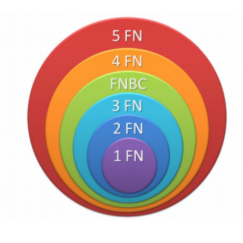
Edgar F. Codd originalmente definió las tres primeras formas normales (1FN, 2FN, y 3FN) en 1970. Estas formas normales se han resumido de forma que todos los atributos sean atómicos, dependan de la clave completa y en forma directa (no transitiva).
La forma normal de Boyce-Codd (FNBC) fue introducida en 1974 por los dos autores que aparecen en su denominación. Las cuarta y quinta formas normales (4FN y 5FN) se ocupan específicamente de la representación de las relaciones muchos a muchos y uno a muchos entre los atributos y fueron introducidas por Fagin en 1977 y 1979 respectivamente.
4.2. Tipos de Dependencias Funcionales ¶
El análisis de normalización se basa en el comportamiento de los atributos de una tabla.
Dependencia Funcional (DF): Se representa como A -> B . Significa que el atributo (o conjunto de atributos) depende funcionalmente de A si para cada valor de A existe un único valor posible de B.
Ejemplo: PRODUCTOS (CódigoProducto, Nombre, Precio, Descripción)
CódigoProducto —> Nombre, puesto que un código de producto solo puede tener asociado un único nombre, dicho de otro modo, a través del código de producto se localiza un único nombre.
Dependencia Funcional Completa (DFC): Se denota como A ⇒ B . Ocurre cuando el atributo depende funcionalmente de un atributo compuesto (formado por varios campos, como una clave compuesta) y no depende de ningún subconjunto propio de A.
Ejemplo: En la tabla de compras (Cod_Producto, Cod_Proveedor) -> Cantidad es completa, pero (Cod_Producto, Cod_Proveedor) -> Descripcion_Producto no lo es, ya que Descripcion_Producto depende únicamente de Cod_Producto.
Dependencia Funcional Transitiva (DFT): Si tenemos tres atributos de una tabla tales que se cumple que A -> B y B -> C (con B no implicando a A), entonces se dice que A tiene una dependencia transitiva respecto a C, A - -> C a través de B ( de forma indirecta).
Ejemplo:
PRODUCTOS (CódigoProducto, Nombre, Fabricante, País)
CódigoProducto -> Fabricante
Fabricante -> País
CódigoProduct - -> País, es decir, CódigoProducto depende transitivamente de País.
4.3. Primera Forma Normal (1FN) ¶
Una relación se encuentra en 1FN si y solo si todos los valores de los dominios de sus atributos son atómicos (elementales, indivisibles y únicos). Se prohíbe terminantemente la existencia de atributos multivaluados o colecciones repetidas de datos en una sola celda.
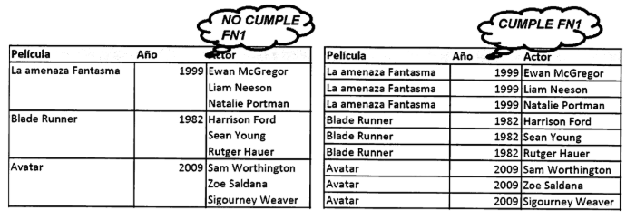
Algoritmo de Transformación a 1FN:
Eliminar el grupo repetitivo o campo multivaluado de la tabla principal.
Crear una nueva relación independiente que contenga el atributo multivaluado atomizado (un único número o elemento por fila).
Vincular ambas relaciones propagando la clave primaria de la tabla base como clave ajena en la nueva tabla. La nueva clave primaria será la concatenación de la clave del padre y el propio atributo atómico.
4.4. Segunda Forma Normal (2FN) ¶
Una relación se encuentra en 2FN si cumple la 1FN y, además, todos los atributos que no forman parte de la clave primaria tienen dependencia funcional completa de la clave primaria. No se permiten dependencias parciales de un subconjunto de una clave primaria compuesta.
Si una tabla en 1FN tiene una clave primaria simple (formada por un único campo), automáticamente se encuentra en 2FN. El análisis de 2FN solo tiene sentido técnico ante claves primarias compuestas.
Algoritmo de Transformación a 2FN:
Identificar los atributos que tienen dependencia parcial de una sección de la clave compuesta.
Extraer esos campos de la tabla base y llevarlos a una nueva tabla independiente.
Establecer como clave de la nueva tabla la sección de la clave compuesta de la cual dependían. Mantener el campo en la tabla original únicamente si es clave ajena de relación.
4.5. Tercera Forma Normal (3FN) ¶
Una relación se encuentra en 3FN si cumple la 2FN y, además, ningún atributo que no sea clave depende de forma transitiva de la clave primaria. Todos los campos que no son clave deben depender única, directa y exclusivamente de la clave primaria.
Algoritmo de Transformación a 3FN:
Identificar el atributo intermedio () que actúa como determinante del campo dependiente transitivo ().
Extraer los atributos y de la tabla base.
Crear una nueva tabla donde sea la Clave Primaria y sea el atributo dependiente.
Mantener el atributo en la tabla original actuando como Clave Ajena (FK) para poder recomponer la relación mediante consultas de composición (JOIN).
4.6. Introducción a Boyce-Codd (FNBC) y Formas Superiores ¶
Forma Normal de Boyce-Codd (FNBC): Es una versión más rigurosa de la 3FN. Exige que el modelo esté en 3FN y que, además, cualquier determinante funcional de la tabla sea una clave candidata. Solo se analiza en tablas con claves compuestas solapadas.
Cuarta Forma Normal (4FN): Se ocupa de eliminar redundancias causadas por dependencias multivaluadas independientes (ej. si un alumno estudia asignaturas y practica deportes, y no hay relación entre las asignaturas y los deportes, se deben separar en dos tablas distintas: Alumno_Asignaturas y Alumno_Deportes).
Quinta Forma Normal (5FN): Trata sobre dependencias de unión y descomposiciones cíclicas complejas que no se pueden reconstruir sin pérdida a menos que se dividan en tres o más tablas relacionadas en bucle.
5. CASOS PRÁCTICOS DE NORMALIZACIÓN ¶
5.1. Ejemplo alumnado de un centro ¶
Supongamos que tenemos la siguiente tabla con datos de alumnado de un centro de enseñanza secundaria.
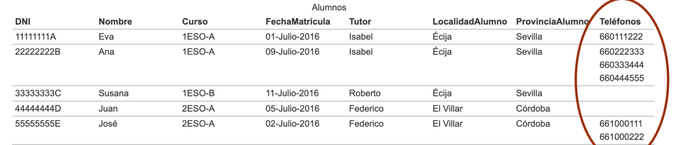
IMPORTANTE: En algunos casos nos darán una tabla con la información y en otros casos, nos darán las relaciones o tablas (nombre, clave y atributos). En cualquier caso tendremos que analizar los datos para identificar qué datos dependen de qué datos.
Como se puede observar, esta tabla no está en 1FN puesto que el campo Teléfonos contiene varios datos dentro de una misma celda y por tanto no es un campo cuyos valores sean atómicos. La solución sería la siguiente:
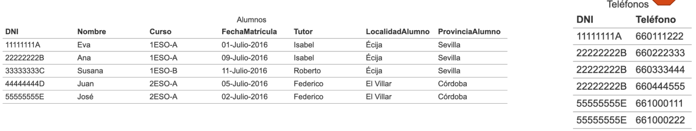
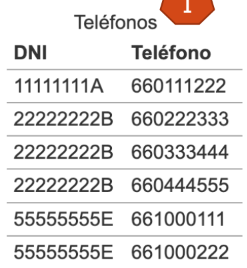
Una Relación está en 2FN si y sólo si está en 1FN y todos los atributos que no forman parte de la Clave Principal tienen dependencia funcional completa de ella. Seguimos con esta tabla
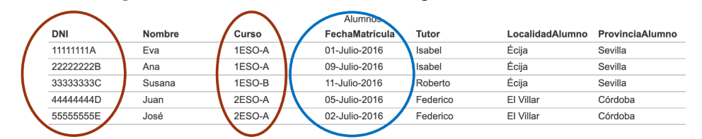
Vamos a examinar las dependencias funcionales. El gráfico que las representa es el siguiente:
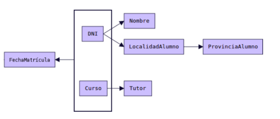
Siempre que aparece un DNI aparecerá el Nombre correspondiente y la LocalidadAlumno correspondiente. Por tanto DNI→Nombre y DNI→LocalidadAlumno. Por otro lado siempre que aparece un Curso aparecerá el Tutor correspondiente. Por tanto Curso→Tutor. Los atributos Nombre y LocalidadAlumno no dependen funcionalmente de Curso, y el atributo Tutor no depende funcionalmente de DNI.
El único atributo que sí depende de forma completa de la clave compuesta DNI y Curso es FechaMatrícula: (DNI,Curso)→FechaMatrícula.
A la hora de establecer la Clave Primaria de una tabla debemos escoger un atributo o conjunto de ellos de los que dependan funcionalmente el resto de atributos. Además debe ser una dependencia funcional completa. Si escogemos DNI como clave primaria, tenemos un atributo (Tutor) que no depende funcionalmente de él. Si escogemos Curso como clave primaria, tenemos otros atributos que no dependen de él.
Si escogemos la combinación (DNI, Curso) como clave primaria, entonces sí tenemos todo el resto de atributos con dependencia funcional respecto a esta clave. Pero es una dependencia parcial, no total (salvo FechaMatrícula, donde sí existe dependencia completa). Por tanto esta tabla no está en 2FN. La solución sería la siguiente:
Una Relación está en 3FN si y sólo si está en 2FN y no existen dependencias transitivas. Todas las dependencias funcionales deben ser respecto a la clave principal.
Seguimos con el ejemplo anterior.Trabajaremos con la siguiente tabla:
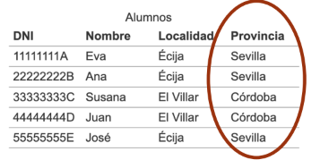
Las dependencias funcionales existentes son las siguientes. Como podemos observar existe una dependencia funcional transitiva: DNI→Localidad→Provincia
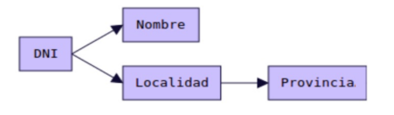
Para que la tabla esté en 3FN, no pueden existir dependencias funcionales transitivas. Para solucionar el problema deberemos crear una nueva tabla. El resultado es:
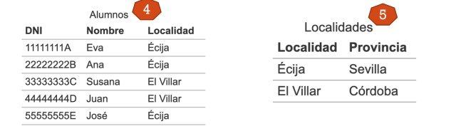
¿Te atreverías a obtener el diagrama E/R que daría lugar a este paso a tablas?
5.2. Órdenes de pedido ¶
Para explicar con un ejemplo en qué consiste cada una de las reglas, vamos a considerar los datos de la siguiente tabla.
ORDENES (id_orden, fecha, id_cliente, nom_cliente, estado, num_art, nom_art, cant, precio)
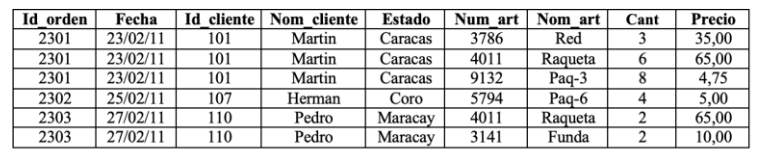
(1FN) Al examinar estos registros, podemos darnos cuenta que contienen un grupo repetido para NUM_ART, NOM_ART, CANT y PRECIO. La 1FN prohíbe los grupos repetidos, por lo tanto tenemos que convertir a la 1ª FN.
IMPORTANTE: En este caso no vemos atributos multivaluados, pero lo que sí se puede observar es que existen grupos de datos repetidos, es decir, que para una clave id_orden tenemos varios registros con NUM_ART, NOM_ART, CANT y PRECIO distintos, un grupo de valores. Lo tenemos considerar como los multivaluados.
En este caso podemos pensar que la clave no ha sido escogida de forma correcta y por tanto tenemos que seguir los siguientes pasos:
Eliminar los grupos repetidos.
Tenemos que crear una nueva tabla con la PK de la tabla base y el grupo repetido.
Los registros quedan ahora conformados en dos tablas que llamaremos ORDENES y ARTICULOS_ORDENES.
ORDENES (id_orden, fecha, id_cliente, nom_cliente, estado)
ARTICULOS_ORDENES (id_orden (FK), num_art, nom_art, cant, precio)
(2FN) Ahora procederemos a aplicar la 2ª FN, es decir, tenemos que eliminar cualquier columna no clave que no dependa de la clave primaria de la tabla. Los pasos a seguir son:
Determinar cuáles columnas que no son clave no dependen de la clave primaria de la tabla.
Eliminar esas columnas de la tabla base.
Crear una segunda tabla con esas columnas y la(s) columna(s) de la PK de la cual dependen.
La tabla ORDENES está en 2FN. Cualquier valor único de ID_ORDEN determina un sólo valor para cada columna. Por lo tanto, todas las columnas son dependientes de la llave primaria ID_ORDEN.
Por su parte, la tabla ARTICULOS_ORDENES no se encuentra en 2FN ya que las columnas PRECIO y NOM_ART son dependientes de NUM_ART, pero no son dependientes de ID_ORDEN. Lo que haremos a continuación es eliminar estas columnas de la tabla ARTICULOS_ORDENES y crear una tabla ARTICULOS con dichas columnas y la llave primaria de la que dependen.
ARTICULOS_ORDENES (id_orden, num_art, cant)
ARTICULOS (num_art, nom_art, precio)
(3FN) La 3ª FN nos dice que tenemos que eliminar cualquier columna no llave que sea dependiente de otra columna no llave. Los pasos a seguir son:
Determinar las columnas que son dependientes de otra columna no llave.
Eliminar esas columnas de la tabla base.
Crear una segunda tabla con esas columnas y con la columna no llave de la cual son dependientes.
ORDENES (id_orden, fecha, id_cliente, nom_cliente, estado) OJO!!!
ARTICULOS_ORDENES (id_orden, num_art, cant) Si está
ARTICULOS (num_art, nom_art, precio) Si está
Al observar las tablas que hemos creado, nos damos cuenta que tanto la tabla ARTICULOS, como la tabla ARTICULOS_ORDENES se encuentran en 3FN.
Sin embargo la tabla ORDENES no lo está, ya que NOM_CLIENTE y ESTADO son dependientes de ID_CLIENTE, y esta columna no es la llave primaria.
Para normalizar esta tabla, moveremos las columnas no llave y la columna llave de la cual dependen dentro de una nueva tabla CLIENTES.
Las nuevas tablas CLIENTES y ORDENES se muestran a continuación.
ORDENES (id_orden, fecha, id_cliente (fk))
CLIENTES (id_cliente, nom_cliente, estado)
Finalmente, de la tabla inicial:
ORDENES (id_orden, fecha, id_cliente, nom_cliente, estado, num_art, nom_art, cant, precio)
Hemos obtenido lo siguiente:
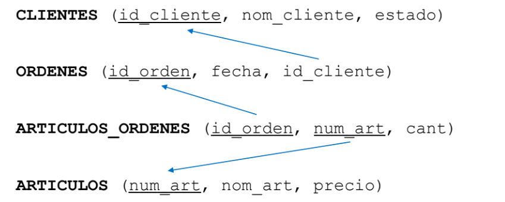
¿Te atreverías a obtener el diagrama E/R que daría lugar a este paso a tablas?
5.3. Juguetes infantiles ¶
La empresa Laberinto S.L. dedicada a los juguetes infantiles tiene una hoja de cálculo de Excel con una tabla en la que recoge los pedidos que efectúa a los proveedores. En una misma fila de la hoja de cálculo incluye todos los productos que se hayan solicitado en ese pedido.
Supuesto: Recuerda que el enunciado te indica que en un mismo pedido puede haber más de un producto y por tanto más de un precio y más de una cantidad (un valor por cada producto incluido en el pedido).
Consejo: si en algún momento no tienes claro algún apartado de la tabla o alguna indicación que te de el enunciado pon un ejemplo con datos inventados, normalmente el ver una tabla rellena con los valores de los atributos aclara mucho al buscar las dependencias.
Realiza los pasos necesarios para normalizar la tabla anterior hasta ·3FN.
PEDIDO (Número_Pedido, Fecha_Pedido, Cod_Proveedor, Nombre_proveedor, Dirección_Proveedor, Referencia_Producto, Nombre_Producto, Precio_Producto, PEDIDOCantidad_Producto)
No está en 1FN ya que existen grupos repetitivos.
Pedido (Número_Pedido, Fecha_Pedido, Cod_Proveedor, Nombre_proveedor, Dirección_Proveedor) estaría en 1FN ya que no hay grupo de valores repetidos.
Producto_pedido (Número pedido(FK), Referencia_Producto, cantidad_producto, precio_producto, Nombre_Producto) estaría en 1FN ya que no hay grupo de valores repetidos.
La primera tabla está en 2FN ya que no tiene clave compuesta
La segunda no está en 2FN ya que tiene clave compuesta y hay atributos que depende de parte de la clave.
Obtenemos las siguientes tablas:
Pedido (Número_Pedido,
Fecha_Pedido, Cod_Proveedor, Nombre_proveedor,
Dirección_Proveedor)
Producto_pedido (Número pedido(FK),
Referencia_Producto (FK), cantidad_producto)
Producto (Referencia
producto, nombre_producto, precio_producto)
Analizamos si están en 3FN y solo la tabla pedido no está en 3FN porque los datos del proveedor no dependen del numero_pedido sino de cod_proveedor (existe dependencia transitiva). Por tanto obtenemos, sacando los datos que dependen de cod_proveedor:
Pedido (Número_Pedido,
Fecha_Pedido, codigo_proveedor (FK))
Proveedor (Codigo_proveedor,
nombre_proveedor, dirección_proveedor)
Producto_pedido (Número pedido(FK),
Referencia_Producto (FK), cantidad_producto)
Producto (Referencia producto,
nombre_producto, precio_producto)